本书的公式非常多，公式是数学应用的一个基本部分，想甩却甩不掉。在这一章中，我们将仔细研究更多的公式，并思考它们的运算法则。
下面这个公式可将摄氏温度（用C 表示）转换为华氏温度（用F 表示）：
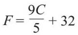
这里，F 是公式的主要元素，当输入一个C 值时，便可得出一个F 。如果我们想把一个华氏温度换算成摄氏温度呢？在读旧版的烹饪书时，这种换算尤为重要。
这种换算与解方程非常相似。整个过程几乎是一样的，但是最后得到的不是一个值，而是一个重新排列的公式：
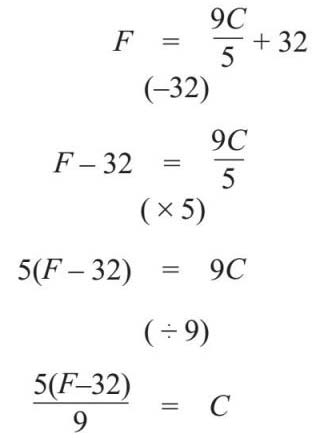
这个新公式与第一个公式相反，两者可逆。例如，如果C =25摄氏度，那么就有：
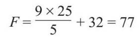
由上式可知25℃等于77℉，如果将其代入新公式，就可知：
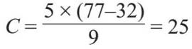
77℉等于25℃，又回到我们开始的地方了。
美国数学家乔治·丹奇格（George Dantzig，1914—2005）在上大学时，有一次上课迟到了。他看到黑板上有两个问题，以为它们是讲师布置的任务。他按时交了作业，当讲师告诉他这不是作业，而是数学研究中两个悬而未决的问题时，他非常惊讶。然后，他被告知他的解题方法已经达到博士论文的水平了。
数学家总是想把某种具体情况推衍至通用情况。在上面的例子中，25℃等于77℉就是一个具体的例子，而通过公式我可以计算出任何值。
数学家总是对数字形成的规律很感兴趣。下面是一个非常简单的例子：
2, 4, 6, 8, 10, 12, 14, 16, 18, 20…
这是一组偶数，或者也可以看成2的倍数。你可以继续按顺序往下写，逐个数字加2。数列中的数字被称为项。数列中的第一项是2，数学家把它写成t 1 =2。我在这里用t 表示，但是也可以选择其他符号。第二项是4，所以t 2 =4，后面依次是t 3 =6，t 4 =8。
下面我们要从具体情况推衍到通用情况。我在前文中说过，前一个数加上2可以得到下一个数。对于数列中的第n 项t n ，我们可以根据以下的公式计算出下一个数：
下一个数=当前数+2
tn+1 =tn +2
这就是数列的归纳性。然而，第一个数的设定决定了整个数列。如果t 1 =2，就会得到偶数数列，但是如果t 1 =1，则得到1, 3, 5, 7…这个数列，即奇数数列。
斐波那契数列就是一个非常著名的数列：
1, 1, 2, 3, 5, 8, 13, 21, 34…
这个以斐波那契命名的数列，规则是将前两个数相加，得到下一个数。即：t n+1 =t n–1 +t n ，且t 1 =1，t 2 =1。
这些数字在自然界中很常见，特别是在植物中。茎和根上的枝条数量通常会形成斐波那契数，或者花的种子穗以及菠萝、松果中的螺旋图案上也有。虽然这些归纳公式可以描述整个数列，但要想计算靠后的数，我们还需要计算中间的各项。如果我想知道第1 000个数，该怎么办？为此，我需要写出表示第n 项的公式。
对于偶数数列，我们可以看到每个数都遵循一种规律。t 1 =2，t 2 =4，t 3 =6，t 4 =8，每一项始终是项数的两倍，所以有t n =2n 。
利用这个公式，我们可以直接计算出第1 000项的值：t 1 000 =2×1 000=2 000。你能算出斐波那契数的第n 项公式吗？可以，但是稍微复杂一点儿。偶数数列的计算相对容易，因为每一次都增加相同的量，但斐波那契数每次增加的量不同。
我们在前文中得知φ =1.618 033 98…这与斐波那契数有什么关系？如果你把斐波那契数的连续项相除，我们会看到：
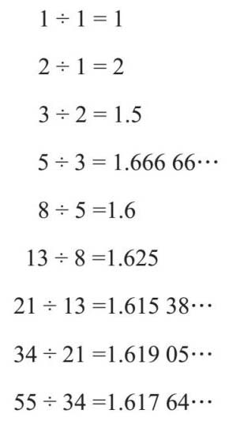
得到的值在φ 附近徘徊。如果我直接跳到斐波那契数中的第19项和第20项，可知：
6 765÷4 181=1.618 033 96…
这个数与φ 的小数点后7位都相同，所以很明显斐波那契数与黄金比例之间存在着某种关系。
为了解释φ 的值，我们可以再看一下那个漂亮的矩形。如果我假设矩形的长边是φ ，短边是1，那么我可以把它标记如下：
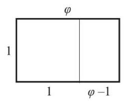
黄金比例的规则之一是较小的矩形也具有相同的比例。大矩形的两条边长分别为φ 和1。较小的矩形两条边长分别是1和φ –1。因此，如果把每个矩形的长度除以它的宽度，就可以得到等价分数：
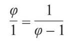
任何事物除以1都等于该数本身，所以：
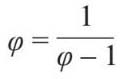
这个式子我们是可以求解的。我们需要把所有字母组合在一起，所以两边同时乘以分数的分母：
φ (φ–1)=1
将括号内的式子展开：
φ 2 –φ =1
这是一个二次方程。为使它等于0，我将两边同时减去1：
φ 2 –φ –1=0
这个二次方程不易分解，所以只能用完全平方法或公式法求解。由于这一章讲的是公式，所以我选择后一种方法：
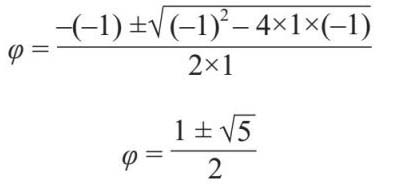
由此式可得φ =1.618 033 988 7…或–0.618 033 988 7…。因为长方形的长度不能为负数，所以我们可以去掉第二个负值。
下面我们回到斐波那契数列的第n项表达式问题。亚伯拉罕·棣美弗（Abraham de Moivre，1667—1754）是法国新教徒，他为了逃避迫害而移居伦敦。在伦敦，他遇见了艾萨克·牛顿，两人成了朋友。牛顿如果被数学题难住了，就会找棣美弗帮忙！棣美弗率先公布了斐波那契数列的公式：
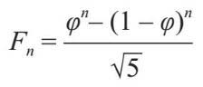
令人惊讶的是，该公式用了两个无理数（φ 和
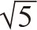
）来生成斐波那契数。棣美弗活到了87岁的高龄，这在那个时代并不多见。然而，传说中他发现自己每晚的睡眠时间在不断加长，并预言当他的睡眠时间比清醒时间更长时，他就会死去。他计算出了具体的日期，并正好在那一天死去。
如果你想成为一名杰出的天文学家，正确理解公式是至关重要的，许多数学家曾涉猎天文学。虽然三体问题以前被提出，但是牛顿在他的巨著《自然哲学的数学原理》中第一次正式阐述了三体问题。这个问题中涉及三个物体在空间中的运动以及它们之间的引力是如何相互影响的。我们在讨论乘方时讲到了这个公式，这里我们再次把它列出来：
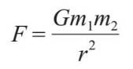
牛顿万有引力定律是指，任意两个物体之间的引力等于它们的质量乘积（m 1 ×m 2 ）除以它们之间的距离的平方（r 2 ），再乘以引力常数（G ）。事实证明，要计算两个物体的运动很容易，比如地球围绕太阳的运转。如果加入第三个物体，比如月球也围绕地球运行，那涉及的数学运算就变得有些复杂。随着不断向系统中增加物体，控制方程就变得越发复杂，以至无法用解析方法求解。你将无法用代数方法来解方程，但是可以通过一些其他的技巧，找到适合方程的解。但这通常是非常耗时的，好在现在可以让计算机为我们做这些事情。
结果就是，对于太阳系中的物体，不管是行星、月亮、卫星，还是小行星等，由于互相之间的引力影响，轨道都会稍微摆动。
天文学家非常善于观察行星的摆动，并用它们来推断太阳系中其他天体的存在。1846年，法国巴黎天文台的奥本·勒威耶（Urbain Le Verrier，1811—1877）经过几个月的计算，对比天王星的实际轨道与根据太阳系当时的模型预测的轨道差值推断出海王星的存在。之后，他的计算被用来观测行星。海王星的数学发现被认为是19世纪最伟大的科学成就之一。
有趣的是，勒威耶继续观察水星的摆动，它预言了另一颗行星的存在，这颗行星被称为瓦肯星。然而，没有人能找到它。直到1916年，阿尔伯特·爱因斯坦才提出该摆动是由于接近太阳所产生的广义相对论效应。
天文学家继续观测海王星，并在统计数字中发现它也受到另一个尚未发现的天体的影响。1930年，美国的克莱德·汤博（Clyde Tombaugh，1906—1997）通过比较望远镜拍摄的相隔两周的夜空照片，发现了冥王星。它很小，且它的存在不足以解释海王星和天王星轨道受到的扰动。冥王星被发现也是由于人们一开始高估了海王星的质量。
如按质量排序，冥王星排在太阳系中的第17位，甚至连月亮也比它重。2006年，国际天文学联合会正式给出行星的定义，而冥王星不是很符合。因此，冥王星和其他几颗星体，如阋神星（Eris）和赛德娜（Sedna）等都被归为矮行星。
但是，克莱德·汤博的一部分骨灰还是由“新地平线号”探测器搭载，于2015年到达冥王星附近。
赛德娜的轨道非常奇怪，当我们用数学分析它和其他几颗遥远的矮行星时，发现可能存在第9颗行星，它比地球大4倍，轨道与太阳系成直角。数学方法确实可行，我们现在要做的就是找到它！
数学是一个历史上由男性主宰的领域。毫无疑问，这是由于教育和机会的不平等，而不是由于性别之间的神经学差异造成的。幸运的是，这种情况正在慢慢地改变，但这确实意味着任何在数学方面有所建树的女性都必须是真正的佼佼者。
德国人埃米·诺特（Emmy Noether，1882—1935）被许多人（男性和女性，甚至包括爱因斯坦）认为是有史以来最优秀的数学家之一。尽管有能力和资历，但她在大学教书却没有报酬，还要以男同事的名义做助教。在教学时，她提出了诺特定理，对物理学产生了深远的影响。
玛利安·米尔扎哈尼（Maryam Mirzakhani，1977—2017）是一位伊朗数学家，是菲尔兹奖的第一位女性获得者，菲尔兹奖是数学界的最高奖项（诺贝尔奖不包含数学奖）。从伊朗大学毕业后，她移居到了美国，在那里她的几何学研究为她赢得了崇高的声誉。她死于癌症，逝世时年仅40岁，是伊朗媒体上极少露出自己头发的女性之一。